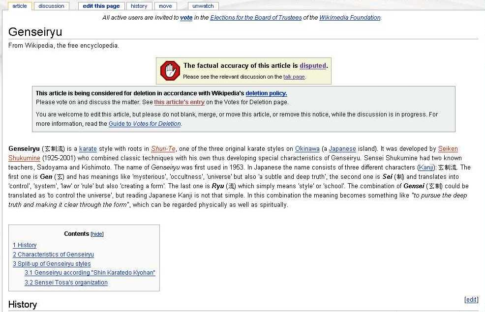
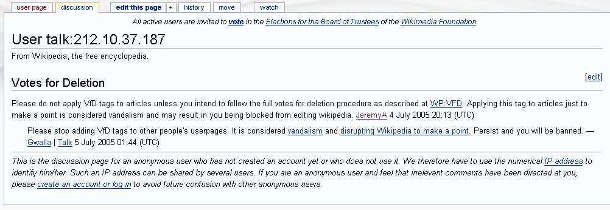
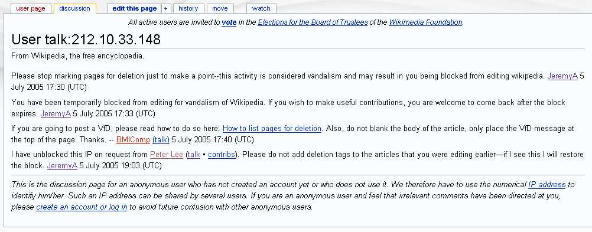
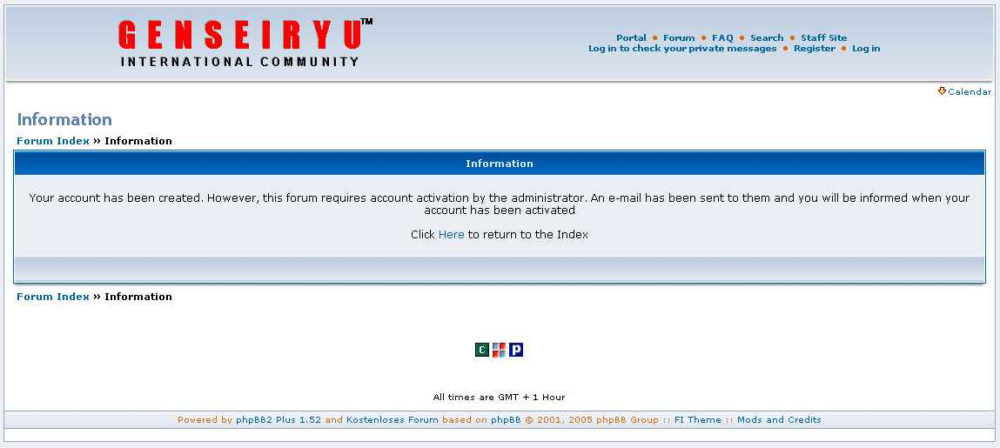
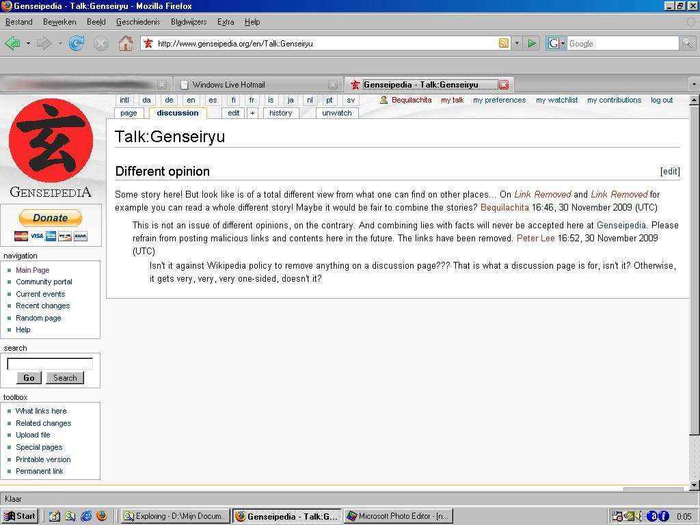

On his own forum, Peter Larsen is Master and Commander. He can change and delete anything he likes, without consequences to the forum (except for creating a one-sided, far from neutral and dishonest forum)... Now on other sites, like Wikipedia, it's a lot more difficult to do so, but he always tries.
Wikipedia
After a long edit war on the Dutch wikipedia ended in the removal of the article about Genseiryu, he tried to start another edit war on the English Wikipedia. I have decided to start an NPOV (Neutral Point of View) article about Genseiryu, highlighting both stories, writing as neutral and honest as possible. This way I wanted to show that we are open for discussion, we do recognize Butokukai and we have nothing against any other organization. Other people inside Genseiryu agreed and started to help me...
It took us some time, but we managed to get quite a nice article on Wikipedia. An article that should satisfy everybody. But we were a little too naive: Peter Lee simply does NOT recognize any other styles besides his own and does NOT want to see anything written by us. He believes he is the only one entitled to write about Genseiryu and even though the story on Wikipedia is an honest and true story with a neutral point of view, he thinks that because we wrote it, it should be deleted...But you can't just delete an article on Wikipedia. You can slightly edit or add text, but you are not allowed to remove parts of text or even the complete article. He tried, but of course some moderators figured it out pretty quickly and undid his pathetic actions...
Now, this is his latest action (4 July 2005):
(Picture Wikipedia-1)

You can see that both templates were created by him, when you click the History tab... Or click this link to directly compare Mario Roering's last version before Peter Lee added his templates...
Now, is this man frustrated or what???
Several people on our side have reset the page to the 'normal' state. Also some moderators agreed that this is not the way of working on Wikipedia and they also reverted to the last version before Peter put in the pathetic templates. But Peter kept persistently going on putting in the templates, again and again. Eventually, the moderators warned him to stop these actions (Peter Larsen works under his pseudo "Peter Lee" on Wikipedia, as can be seen in the history, but sometimes he works "anonymously", but it's still possible to see his IP address, which is in the range of 212.10.3x.xxx):
(Picture Wikipedia-2)

Hopefully this persistent vandal will now come to his senses...
Well... He didn't come to his senses... He tried and tried over and over again... Until he was BLOCKED (temporarily) from a moderator who finally saw that this is the only solution:
(Picture Wikipedia-2)

He's already unblocked again, but if he continues his pathetic actions, he will be blocked again, maybe permanently... That would be the only way to stop him from vandalizing articles on wikipedia.
Peter Lee's forum
Since we (all people of Genseiryu Netherlands) are banned from the forum, I have tried to create a new account, with a different name. I already saw some changes on the forum and I wondered why. Now I know why: in the upgrade it's not possible anymore to create a new account without setting the account free by the administrator (which is, of course, Peter Lee):
Of course he checked the ip address and knew it was me creating the account. He never set it free of course... This is his way of making sure that the site and forum contains only information from HIS side only. Nobody else is allowed the freedom of speech... Nobody who is attacked on his forum is allowed a defense! Very brave, very brave!!
Genseipedia
Everybody knows Wikipedia. Wikipedia is written on an open source wiki software platform, so it's easy to copy and make your "own" version of it. That is exactly what Peter Lee has done. He has created "Genseipedia". It looks a lot like Wikipedia, you can create an account, edit, see the history, start a discussion on the "talk page", etc. However, it's a "wolf in sheep's clothes", a "devil in disguise"!!! First of all, almost all the edits are done by only ONE person: Peter Lee. This can be seen clearly in the "recent changes page", of which this is an example (you can see only the name of Peter Lee, no other editor!):
If you go to the "Recent changes page" you will see that over 90% of the edits come to the account of Peter Lee. How is that for a MONOPOLY??? An "encyclopedia", written by ONE SINGLE person??? How more one-sided could it be???
Now, I have tried something... I created an account and went to the Genseiryu page and the WGKF page. I didn't change anything to the article, just wanted to see how he would react to the start of a discussion. On the real Wikipedia, the messages on the discussion page are to be untouched by others, to stimulate discussions. Now, this policy is definitely different on Genseipedia...
First I wrote a simple sentence, to start some form of discussion. I referred to two links, both links leading to a site where information about Genseiryu can be found. Of course, different information from the one Peter wrote in his article... So, after about 10 minutes, there was already a reaction from Peter (is he behind the computer 24/7???). AND... He removed the links! This is NOT done on any good discussion page. Absolutely NOT done. He could give his opinion on it, but simply removing them and calling it lies and malicious, that is no sign of fair discussion at all!!! So, I gave another reaction about that:

It didn't take long after that, till the whole discussion got deleted... If you go to that discussion page now, you won't see any of this "discussion" any more... Same goes for the discussion page of WGKF...
Of course, I also got an "official warning" (where Peter Lee is of course the "official"):
Now it is absolutely, 100% clear, that Genseipedia is NO PLACE for discussion. It is NO PLACE for good, solid, honest information about Genseiryu!!! Everything is written from the view of only ONE person, named Peter Lee...
So, now that I got that "uncovered", I decided to do some editing on the Main Page of Genseipedia, 'coz I found the information there incorrect and misleading. I changed it into this:
Of course, as you can expect, Peter Lee was so furious, he immediately blocked me FOR EVER!!!!!!!!!! This is what it says now on "my" talk page:
User talk:Bequilachita
From Genseipedia
This page has been deleted. The deletion log for the page is provided below for reference.
- 17:48, 30 November 2009 Peter Lee (Talk | contribs) deleted "User talk:Bequilachita" (content was: '=== Official Warning === Your harassment, slander and defamation has been deleted. Please read Link Removed and About, before postin…' (and the only contributor was 'Peter Lee'))
And that for just telling the truth... Okay, I agree, in a harsh way, but still the truth!!!
Now, on Wikipedia, I would have risked getting a block for violating edit laws (if it really would be vandalism) for 1 day, or maybe 48 hours, in the worst case for a week... But getting blocked for ever within just about 30 minutes after creating an account, that is beyond "ridiculous"... But of course, Peter Lee is lord and master on "his" Genseipedia and he can do whatever he pleases... Brave, very brave!!!
So, just stay away from Genseipedia!!! Unless you want to be fooled, lied to, and misinformed...
<HOME>
{kind=link}
{kind=link}
{kind=link}